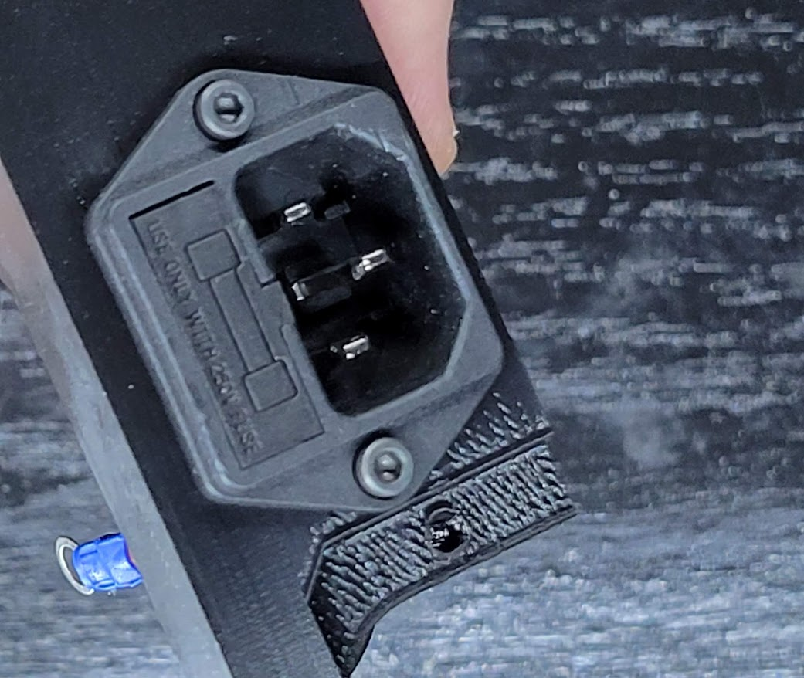
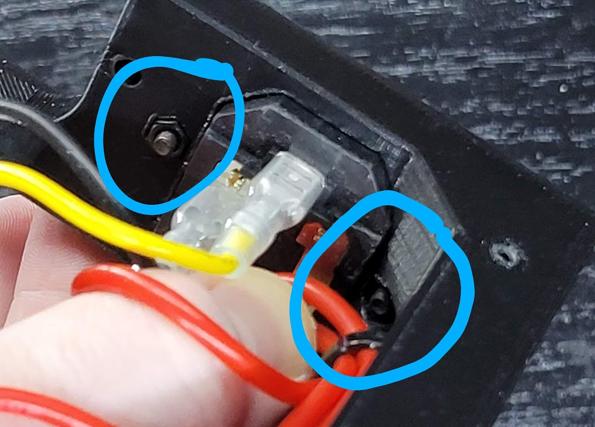
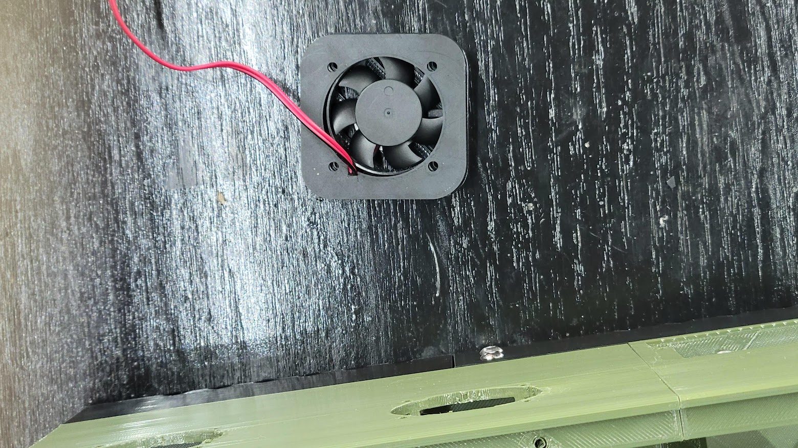
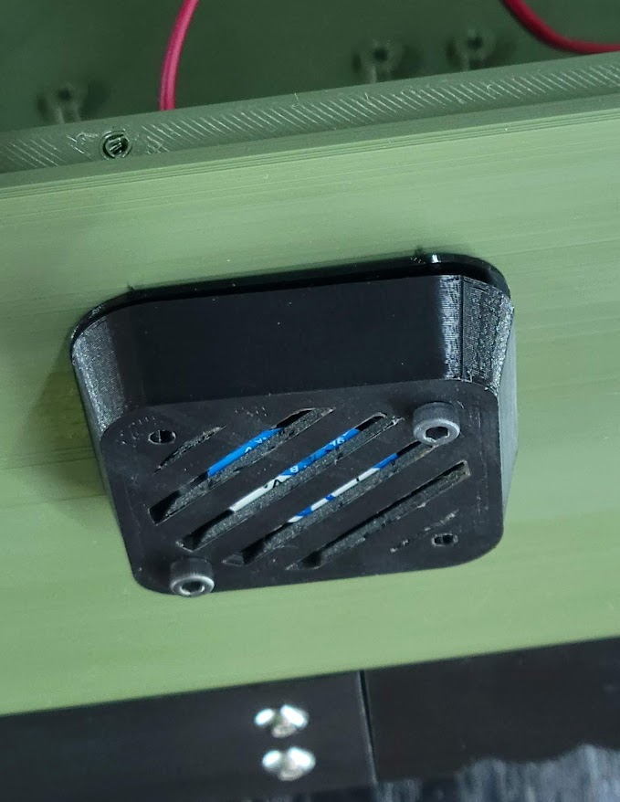

Core
Base
You will need:
| Parts | Qty | Note |
|---|---|---|
| M4 x 16mm machine screws | 4 | Can substitute with M4 x 20mm |
| M3 x 16mm machine screws | 2 | Can substitute with M3 x 20mm |
| M3 hex nuts | 2 | |
| SPST toggle switch | 1 | |
| IEC C14 socket with fuse | 1 | |
| Base - Front | 1 | Base - Front.stl |
| Base - Rear | 1 | Base - Rear.stl |
Directions:
| Step | Example |
|---|---|
| Both front and rear halves of the base have two (2) holes on each side. Use the four (4) M4 screws to fasten them together. Note: Make sure the sawtooth air vents on both halves are facing the same direction, as in the picture. |  |
| Push the power switch into the cutout in the front of the base. The sides of the switch will compress until it snaps into place. |  |
| Insert the IEC socket into the rear base, followed by the M3 x 16mm screws. |  |
| There are two pockets for hex nuts opposing the M3 screws. One hex nut at a time, press a nut in place while turning the opposing screw. Once the threads of the screw catch the nut, continue threading until the nut is tight. |  |
| There is a 40mm fan mount behind one of the front air vents. If you wish to use a 40mm fan there, install it now with four (4) M3 x 16mm machine screws. |  |
| Now is a good time to run the AC wiring for the power supply. Zip tie anchors are available for the wire run from socket to switch and back to power supply. |  |
{kind=link}
{kind=link}
Base Extensions
If you are installing the base extensions (needed for the RSP-500 power supply), follow the next steps. If not, skip down to the Main Body section.
You will need:
| Parts | Qty | Note |
|---|---|---|
| M3 x 8mm machine screws | 4 | Any length up to 20mm will work. |
| Base - Front Extension | 1 | Base - Front Extension.stl |
| Base - Rear Extension | 1 | Base - Rear Extension.stl |
Directions:
| Step | Example |
|---|---|
| Flip the base upside down. |  |
| Place the front extension over the front edge of the base, as pictured. Attach with two (2) M3 x 8mm screws. |  |
| Place the rear extension over the rear edge of the base. Attach with two (2) M3 x 8mm screws. |  |
Main Body
You will need:
| Parts | Qty | Note |
|---|---|---|
| M3 x 8mm machine screws | 6 | Can substitute M3 x 10mm or 12mm. |
| #6 x 3/4" sharp point screws | 8 | See note below. |
| M3 x 16mm machine screws | 2 | Can substitute M3 x 20mm. |
| M4 x 6mm machine screws | 4 | See caution below. |
| Main Body - Front | 1 | Main Body - Front with 40mm Intake.stl used here. |
| Main Body - Rear | 1 | Main Body - Rear with 40mm Exhausts.stl used here. |
| Main Body - Crossbar | 1 | Main Body - Crossbar |
| A power supply unit (PSU) | 1 |
Notes and Cautions:
Note
Sharp point screws are easier to use than machine scews for attaching the main body and base. For this you can use #6 x 3/4" screws (SAE) or M3 equivalent screws found at any hardware store. If these are not convenient or available, M3 machine screws will work in their place.
Caution
Always stop if you feel resistance when fastening screws to the power supply.
Screws longer than 8mm may touch components in the power supply and short or damage them. Most models have no extra cleareance for overtightening if 8mm machine screws are used; thus we advice 6mm for safety.
Directions:
| Step | Example |
|---|---|
| Using six (6) M3 x 8mm screws, add a screw at a time to fasten the rear body to the front. Alternate sides with each screw. Note: Insert the screws from the back to the front of the case. |  |
| Here we have all six screws inserted. |  |
| Line up the holes on the top of the power supply with the main body. The holes pointed at in the picture need to align. |  |
| Mount the power supply using four (4) M4 x 8mm screws. |  |
| Place the assembled main body on top of the base. Using your long machine or sharp point screws, partially thread one screw near one of the rear corners and an opposing front corner. |  |
| Continue adding screws on alternating sides until all eight (8) screws are partially threaded, then tighten them all. |  |
| Place the crossbar in place at the joint between the lid and display mounts. Take note of the orientation in the picture. |  |
| Attach the crossbar with two (2) M3 x 16mm screws, one in each side. |  |
Fans
Fan locations and sizes vary by configuration. This section is specific to the configuration assembled in this guide. The length of screws needed and printed parts will vary, but the method of mounting fans used here is identical for all sizes of externally mounted fans.
Note
60mm and smaller fans are mounted with M3 machine screws. 80mm and larger use M4 machine screws.
You will need:
| Parts | Qty | Note |
|---|---|---|
| M3 x 20mm machine screws | 8 | |
| 40x40x10mm fans | 2 | Can use 4015 or 4020 fans with the correct fan cage and gasket. |
| 40mm Fan Cage | 2 | 4010 Fan Cage.stl |
| 40mm TPU Fan Gasket | 2 | Optional. 4010 Fan Gasket, TPU.stl |
Additionally, if you wish to mount a fan in the front main body air intake, you will need:
| Parts | Qty | Note |
|---|---|---|
| M3 x 16mm machine screws | 4 | |
| 40x40x10mm fan | 1 |
| Step | Example |
|---|---|
| Place a fan inside the cage. The stickered side of the motor indicates direction of airflow, so we have it facing towards the fan grill. |  |
| (Optional) If you are using TPU gaskets, place a gasket over the fan and cage. Carefully cut out a small space for the wire to pass through. |  |
| Insert the fan's wires through the cutout in the main body. Partially thread in two (2) M3 x 20mm screws on opposing sides of the fan cage. |  |
| Insert and thread the other two (2) M3 screws. Ensure the fan's wires do not pinch or bind, then finish tightening all four (4) screws. |  |
| Repeat the above process for the second fan. |  |
| If you wish to mount a fan in the air intake, place the fan with the airflow oriented inwards. Use four (4) M4 x 16mm screws to fasten the fan in place. |  |
{kind=link}
{kind=link}